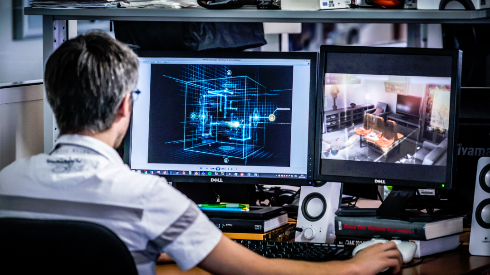

Введение
Гейм-девелопмент — это процесс создания видеоигр. Гейм-девелопер работает над всеми аспектами игры, начиная от программирования и дизайна, до создания персонажей и уровня. Это требует знания различных технологий и навыков, чтобы создать увлекательный и качественный продукт.
Гейм-девелоперы должны быть знакомы с языками программирования, игровыми движками, а также с дизайном и анимацией. Важно понимать, как взаимодействуют механики игры, чтобы создать не только красивую, но и увлекательную игру.
История гейм-девелопмента
Гейм-девелопмент начал своё развитие в 1970-х годах с первых аркадных игр, таких как Pong. Постепенно технологии улучшались, и видеоигры становились всё более сложными и интересными. В 1990-х годах начали использоваться более мощные графические движки и появились 3D-игры.
Важными этапами стали:
- Развитие 3D-графики и движков, таких как Unreal Engine
- Появление мультиплеера в играх
- Интеграция физики и искусственного интеллекта
- Мобильные игры и VR/AR технологии
Программирование игр
Программирование является основой гейм-девелопмента. Создание игровых механик, логики, а также взаимодействия с игроком — всё это требует умения работать с различными языками программирования, такими как C++, C#, Python и другими.
Основные языки программирования для гейм-девелопмента:
C++: используется в популярных игровых движках, таких как Unreal EngineC#: основа для Unity, одного из самых популярных игровых движковPython: используется для прототипирования и создания простых игр
Игровые движки
Игровые движки — это программное обеспечение, которое упрощает процесс разработки игр, предлагая инструменты для создания графики, анимации, физики, искусственного интеллекта и многого другого.
Популярные игровые движки:
- Unreal Engine — мощный движок с возможностями для создания AAA-игр
- Unity — гибкий движок, идеально подходящий для мобильных и инди-игр
- Godot — бесплатный и открытый движок для создания 2D и 3D игр
Курсы
Разработка игр